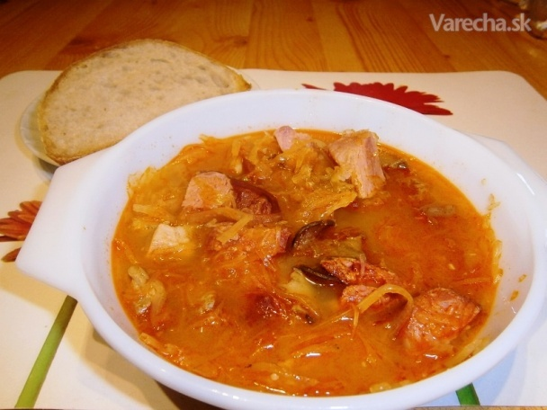

Kapustnica

| Porcie |
6 |
| Kalórie na porciu |
220 kcal |
| Bielkoviny |
12g |
| Tuky |
8g |
| Sacharidy |
28g |
| Vláknina |
6g |
Ingrediencie
- 500g kyslej kapusty
- 300g údenej klobásyy
- 50g sušených húb
- 1 veľká cibuľa
- 2 strúčiky cesnaku
- mletá paprika, rasca, bobkový list
Postup
- Sušené huby zalejeme teplou vodou a necháme ich aspoň 20 minút namočiť.
- Cibuľu ošúpeme, nadrobno nakrájame a orestujeme na oleji.
- Pridáme mletú papriku, rýchlo premiešame a ihneď podlejeme vodou, aby nezhorkla.
- Do hrnca pridáme kyslú kapustu, klobásu nakrájanú na kolieska a namočené huby.
- Pridáme bobkový list a rascu.
- Polievku necháme pomaly variť približne 60 minút.
- Počas varenia občas premiešame a podľa potreby dolievame vodu.
- Na záver pridáme pretlačený cesnak a dochutíme soľou.
- Kapustnicu necháme ešte chvíľu odstáť, aby sa chute spojili.
← Späť na recepty